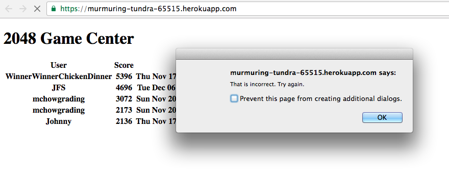

I was assigned a web application and hired to penetrate and analyze it for security and privacy problems.
I used the tool "Postman" to test the different user-input fields of the application. I also attempted to use query strings to access data.
The biggest security and privacy issue is that the application is susceptible to malicious user input! When the application asks for a username, instead of inserting a username, the user can input other things. For example, the user could add code that creates pop-ups and buttons and can even redirect the user to another website.
1. Application is susceptible to cross-site scripting (XSS) using the "username" field. This is a medium severity issue because it allows the user to input things like prompts and alert windows which can be set to loop infinitely, making the application unusable unless the user blocks the windows. I found this issue by testing all input fields with XSS. Here is the prompt:
And this is the subsequent alert message (unless the user types my name):

A resolution would be to sanitize user input by removing certain characters like '<'. For example, var name = string.replace('<', '') replaces '<' with an empty string.
2. Application is susceptible to other database injection using the "username" field. This is an issue of high severity, because it allows the user to input things like buttons which can redirect the user to an unsafe page. I found this issue by doing exactly that! Here is the button:
If the user clicks the button, the user is redirected to this page:
But even if the user does not click the button, they can also be redirected. I did that as well, with the following warning message first:
Again, a possible resolution would be to sanitize user input by removing certain characters like '<'. For example, var name = string.replace('<', '').
3. Bad programming practice on the /scores.json page, because the application uses a 'for' loop to identify the correct data to display. This is a low severity issue because it is only a problem if the application has a lot of data, and the problem is that the application will slow down. It doesn't seem inherently unsafe though; it was not susceptible to the query strings I attempted (e.g. [$ne]). I found this issue by reading the code. Here is the section:
for (var count = 0; count < cursor.length; count++) {
if(cursor[count].username == query)
scoreArr[count] = cursor[count];
}
A resolution to this problem would be to not use a loop. For example, just use collection.find({ "username": username }).toArray(function(err, results) {
res.send(results); }); However, this introduces other security issues (there are always trade-offs). Luckily those security issues can also be resolved with the right precautions.
This web application was susceptible to cross-site scripting and database injection, both of which can be resolved with a few input sanitizing precautions. This application also featured some code (a for loop) that is resistant to certain query strings but at the cost of being slower. This can also be resolved. Watch out for sharks!